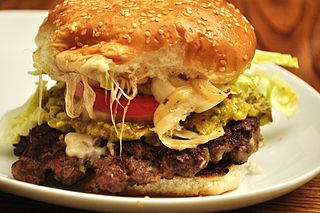

Introduction
The hamburger was invented in the 19th century, and it became a true American staple throughout the cold war - and beyond.
Sometimes, historians like to use the hamburger as a form of Soft Power: it's an 'American' product which has reached all across the world: It is not without reason that one of the most famous economic principles is called 'The Big Mac Index'.
For fun's sake its fun to note the meaning of the Big Mac Index: it determines the difference in Purchasing Power between nations by analysing the price of a local hamburger.
Purchasing Power concerns how many goods citizens can buy with their income (it indicates the 'strength' of a national currency).
Recipe
- 1 bun
- 10g Salad
- 1 Pc hamburger meat
- 1 Pc of non-burnt bacon
- 1 slice of cheese
- Hanful of onions
- 3 Pickles
- 1 slice of tomato
- ½ Tbs Pomegranade jam
- ½ Tbs Burger sauce

Instructions
Stack dish according to the listed order (serves 1 person). You may barbeque or cook the hamburger & bacon in a pan.
Further discovery
Video considering who truly invented the Hamburger.